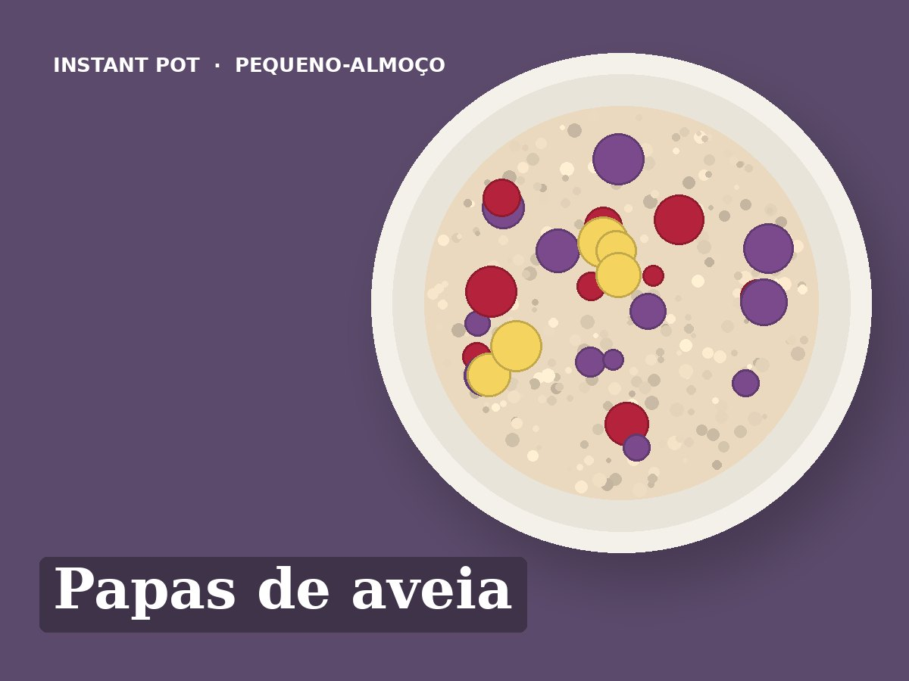

Papas de aveia
Idioma: português de Portugal (pt-PT). Esta receita está escrita em português de Portugal. Ao importar, manter o título, os ingredientes e todos os passos em português, sem traduzir para inglês. Usar unidades métricas (g, ml, °C).
Ingredientes
- 120 g de flocos de aveia sem glúten
- 750 ml de bebida de aveia sem açúcar
- 1 pau de canela
- Casca de 1 limão (só a parte amarela)
- Mirtilos q.b.
Preparação
- Pôr a aveia, a bebida de aveia, o pau de canela e a casca de limão na Instant Pot e mexer.
- Fechar a tampa com a válvula em Sealing. Pressure Cook em alta pressão, 3 minutos.
- Deixar libertar a pressão naturalmente durante 10 minutos e depois abrir a válvula.
- Retirar o pau de canela e a casca de limão e mexer bem.
- Servir com mirtilos por cima. Guardar as restantes doses no frigorífico até 3 dias e aquecer com um pouco de bebida de aveia.